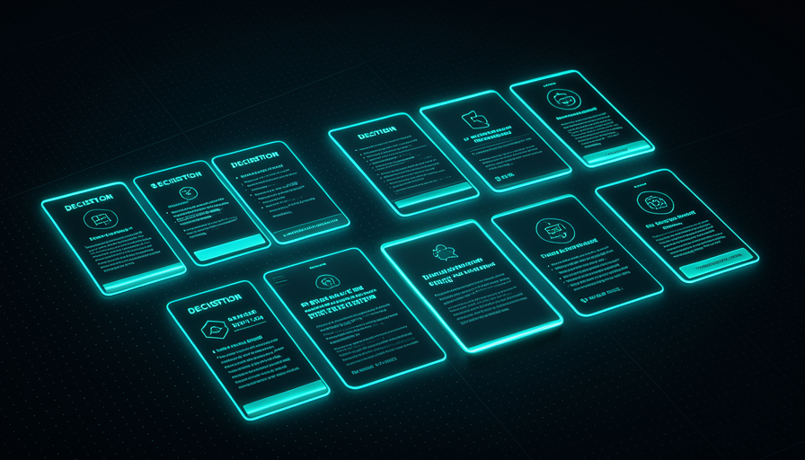
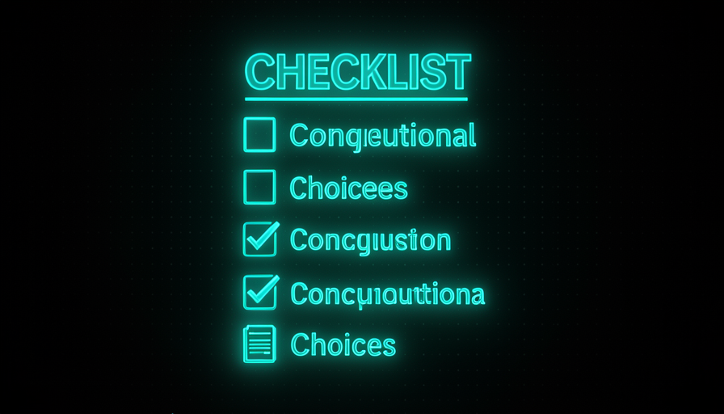

📖 Glosario vivo (lee antes — vuelve siempre que lo necesites)
Estos son los términos NUEVOS de este módulo. El vocabulario básico (modelo, prompt, agente, skill, codebase, harness) se definió en la Ruta 1; aquí solo lo usamos.
🔥 La skill grill-me (texto)
🧠 Imagínalo así: antes de construir una casa, un buen arquitecto no dice «ok, voy a empezar». Te llena de preguntas: ¿cuántas habitaciones? ¿Sol por la mañana o por la tarde? ¿Presupuesto? Cada respuesta evita construir una pared en el lugar equivocado. Grill-me convierte a la IA en ese arquitecto insistente, y por eso funciona.
A grill-me es, en palabras de Matt Pocock, "unreasonably effective" (eficaz hasta un punto que parece injusto) — y el secreto es que es minúscula: cabe en 4-5 frases. No le enseña a programar a la IA; solo cambia la postura de ella. En vez de que la IA tome tu pedido vago y empiece a programar suponiendo cosas, se convierte en entrevistadora adversarial que pregunta, propone ideas que no habías considerado y resuelve las dependencias del design tree una por una.
El detalle que hace brillar la skill está en las instrucciones finales: una pregunta a la vez (no un cuestionario de 20 puntos que te paraliza), con la respuesta recomendada incluida (tú solo confirmas o corriges, mucho más rápido) y si la pregunta se puede responder mirando el codebase, la IA mira el codebase en lugar de preguntarte. Este último punto es lo que distingue a grill-me de un chatbot parlanchín: solo gasta el tu tiempo en lo que realmente requiere tu atención. Abajo, el texto REAL de la skill (frame 31 del video): copia y pega:
Interview me relentlessly about every aspect of this plan until we reach a shared understanding. Walk down each branch of the design tree, resolving dependencies between decisions one-by-one. For each question, provide your recommended answer. Ask the questions one at a time. If a question can be answered by exploring the codebase, explore the codebase instead.
La skill cambia las reglas: la IA te interroga en vez de adivinar. El resultado es la comprensión compartida.

⚠️ Error común de principiante
Creer que «skill buena» = «skill grande». La grill-me es poderosa porque es breve. Si la llenas con 30 reglas, se convierte en ruido, consume context window y pierde el foco. Resiste las ganas de «mejorarla» alargándola.
En 1 frase: grill-me son 5 frases que convierten a la IA en una entrevistadora adversarial: una pregunta a la vez, junto con una sugerencia.
Profundiza (opcional): ¿por qué «una pregunta a la vez» lo cambia todo?
Cuando la IA lanza 15 preguntas de una vez, respondes en piloto automático y las decisiones importantes se pierden en medio. Una pregunta a la vez obliga a enfoque: cada respuesta tuya actualiza el contexto y refina la siguiente pregunta. Es un diálogo, no un formulario. Súmale «da tu respuesta recomendada» y pasarás de autor de respuestas a revisor de respuestas: mucho menos esfuerzo por decisión.
🔟 El prompt de las 10 decisiones
🧠 Imagínalo así: vas a viajar en auto por el país. Hay mil decisiones (qué estación de servicio, qué bocadillo), pero solo unas 10 cambian todo el viaje: ruta, auto, fechas, con quién vas. Equivocarte de restaurante cuesta 5 minutos; equivocarte de ruta cuesta el día. El prompt de David obliga a la IA a enumerar las «rutas» antes de dejarte salir a la carretera.
Mientras que la grill-me es una skill guardada, el prompt favorito de David Ondrej es una instrucción que pega directamente. La estructura tiene tres movimientos en una sola frase: (1) "describe mi visión" — hace que la IA te devuelva, con sus propias palabras, lo que entendió de lo que quieres (y así detectas malentendidos temprano); (2) "enumera las 10 decisiones con mayores consecuencias" — de diseño de software / arquitectura y de producto — que darán forma al proyecto; y (3) "entrevístame hasta que entiendas el 98%".
El número "10" no es mágico — es un presupuesto de atención. Obliga a la IA a priorizar: separar las decisiones que determinan todo (una decisión importante, como «monolito o microservicios», «qué base de datos», «autenticación propia o de terceros»), de las reversibles y baratas (el color de un botón). Sin ese límite, la IA enumera 3 cosas obvias o vuelca 50 elementos triviales. Pedir exactamente las 10 más importantes es lo que da lugar a una conversación que vale tu tiempo. Copia el prompt:
Describe mi visión para este proyecto con tus propias palabras. Después, enumera las 10 decisiones más importantes —de diseño de software / arquitectura y de producto— que darán forma a este proyecto. Luego entrevístame, una pregunta a la vez, hasta que entiendas mi visión al 98 %. Para cada pregunta, da tu respuesta recomendada. Si algo se puede responder explorando el codebase, explora el codebase en lugar de preguntarme.
En 1 frase: "describe mi visión → enumera las 10 decisiones más importantes → entrevístame hasta llegar al 98%" obliga a la IA a priorizar antes de programar.
🎯 "Entrevístame hasta llegar al 98%"
🧠 Imagínalo así: "entendí el 100%" no existe: siempre queda algún detalle que solo aparece al programar. Pero "entendí el 60%" es una receta para tener que rehacer el trabajo. El 98% es el punto ideal: suficiente alineación para empezar, sin convertirlo en una reunión infinita en busca de la perfección.
El «98 %» es un número de parada inteligente. Resuelve el problema opuesto al de grill-me sin límites: sin un objetivo, la entrevista termina demasiado pronto (la IA cree que entendió y se va con un 50%) o nunca termina (pregunta detalles triviales hasta el fin del mundo). Al pedir "hasta el 98%", le dices a la IA: sigue preguntándome mientras haya decisiones importantes pendientes; detente cuando solo queden detalles que se resuelven durante la implementación. Es la traducción práctica del shared understanding de Pocock.
¿Por qué no el 100 %? Porque los últimos 2% solo aparecen con las manos en el código: intentar cerrarlos en la entrevista es un desperdicio. ¿Y por qué vale tanto la pena alinearse antes? Porque es aquí, en la conversación barata, donde "eliminas lo extraño antes de implementar" (flush out weirdness before we implement, en palabras de Pocock). Un malentendido detectado en la entrevista cuesta una frase; el mismo malentendido detectado después de 2 horas de código cuesta esas 2 horas —más tu paciencia. Error común: tratar la entrevista como un trámite y responder "me da igual" a todo: entonces el 98% es falso y vuelve el retrabajo.
🔬 Ejemplo resuelto: grill-me en una "app de notas"
Pegas el prompt de las 10 decisiones con la visión "quiero una app para anotar ideas". La IA describe tu visión y comienza la entrevista, una pregunta a la vez, junto con una sugerencia:
IA · pregunta 1 (decisión: público)
"¿Es solo para ti o para varios usuarios? Recomiendo: solo tú en la v1 — elimina la autenticación y la sincronización ahora." → Tú: "solo yo."
IA · pregunta 2 (decisión: persistencia)
"¿Notas en el navegador (localStorage) o en un archivo en el disco?" Recomiendo: archivos .md en una carpeta — portátiles y versionables.» → Tú: "archivos .md, sí."
IA · pregunta 3 (decisión: búsqueda)
"¿Basta con buscar texto o quieres etiquetas?" Recomiendo: texto en v1, etiquetas después." → Tú: "basta con texto."
En 3 preguntas, se bloquearon tres decisiones importantes — antes de una línea de código. La IA llega al 98 % y solo entonces propone el plan. Sin la grill-me, habría supuesto "multiusuario + base de datos Postgres + auth" y descubrirías el exceso recién en la revisión.
Recuperación rápida: ¿por qué el prompt pide «98%» y no «100%»?
En 1 frase: 98% es «lo bastante alineado para empezar»; el 2% final se resuelve con las manos en el código.
⏱️ Cuándo usar
🧠 Imagínalo así: tú no llamas al arquitecto para cambiar una bombilla. Pero ¿para construir una casa? Siempre. Grill-me es el arquitecto: úsalo cuando la tarea sea nueva, ambigua o fácil de hacer mal; no para un ajuste de una línea.
Pocock presenta grill-me como sustituto del plan mode: en lugar de que el agente te entregue un plan que apruebas a ciegas, primero te entrevista. Su frase resume el disparador: "esta es mi idea, entrevístame, lleguemos a un entendimiento compartido, saquemos a la luz lo extraño antes de implementar." Es decir: úsalo siempre que haya una idea ambigua a resolver antes de la ejecución.
En la práctica, vale la pena cuando: la feature es nueva (no hay un patrón listo en el codebase), hay decisiones de arquitectura o producto en juego, el costo de equivocarse es alto (rehacerlo duele), o sientes que tu propia idea todavía está nebulosa. No aplica a tareas pequeñas y obvias («renombra esta variable», «corrige este typo»): ahí la entrevista genera fricción. Error común: ejecutar grill-me en todo, incluso en lo trivial, y molestarse con la IA por «preguntar demasiado» — el problema no es la skill, sino el contexto de uso equivocado.
✓ Usa grill-me cuando…
- • Función nueva, sin un patrón en el codebase.
- • Hay decisiones de arquitectura/producto en juego.
- • El costo de equivocarse es alto (duele rehacerlo).
- • Tu propia idea todavía no está clara.
✗ Omite grill-me cuando…
- • Es un typo, un rename o un ajuste de una línea.
- • Ya existe un patrón claro que seguir.
- • La tarea es mecánica y reversible.
- • Solo quieres un borrador rápido para tirar.

En 1 frase: usa la grill-me como sustituto del plan mode para todo lo nuevo, ambiguo o costoso de equivocarse, no para lo trivial.
🛠️ Adaptar a tu proyecto
🧠 Imagínalo así: la grill-me es una receta base para un pastel. Funciona tal cual, pero queda mejor cuando la ajustas a tu horno: cambias la cantidad de decisiones, el enfoque del proyecto, el tono. La estructura se mantiene; tú calibras los ingredientes.
Pocock insiste en que las skills son para adaptar, no venerarlo. La grill-me y el prompt de las 10 decisiones son puntos de partida; el verdadero beneficio viene de calibrarlos según el tu contexto. Tres palancas: (1) el número — "10 decisiones" pueden convertirse en 5 para corregir un bug o en 15 para un producto greenfield; (2) el enfoque — pide que las decisiones prioricen lo que te importa (¿rendimiento? ¿accesibilidad? ¿costo de infraestructura?); (3) el detonante codebase — en un proyecto existente, refuerza «explora el codebase antes de preguntarme» para que no te interrogue sobre cosas que ya están decididas en el código.
Otra adaptación poderosa: guardar la grill-me como una skill con nombre (p. ej.: /grill-me) para invocarlo con un comando y mantener la versión de las 10 decisiones como un snippet que pegas cuando el proyecto es grande. Y el punto que conecta con la próxima clase: la grill-me rara vez va sola — es el primer eslabón de un pipeline (grill-me → PRD → issues) que verás en el módulo 5.3. Error común: copiar el texto en inglés y nunca traducirlo ni adaptarlo a tu dominio — la skill rinde mucho más cuando habla el idioma de tu proyecto.
--- name: grill-me description: Entrevista adversarial antes de implementar. --- Descreva a minha visão com as suas palavras. Liste as N decisões mais consequentes (arquitetura + produto), priorizando CUSTO e SIMPLICIDADE. Me entreviste uma pergunta por vez até 98% de entendimento, sempre com a sua resposta recomendada. Se a resposta estiver no codebase, explore o codebase em vez de perguntar. (N = 5 pra bug fix, 10 padrão, 15 pra projeto novo.)
En 1 frase: mantén la estructura (describe → enumera → entrevista hasta el 98%) y ajusta la cantidad, el enfoque y el disparador de codebase a tu proyecto.
🚧 Errores comunes
🧠 Imagínalo así: de nada sirve el mejor arquitecto del mundo si respondes "da igual" a todas sus preguntas. La grill-me solo funciona si colaboras: amplifica tu claridad, no la sustituye.
La grill-me falla de pocas formas predecibles. La primera es inflar la skill: "mejoras" el texto llenándolo de reglas, pierde el foco y el efecto desaparece. Lo segundo es responder en automático ("da igual", "puede ser"); así, el 98% es falso y vuelve el trabajo repetido que querías evitar. La tercera es omitir el activador de codebase: si no incluyes «explora el codebase en lugar de preguntarme», la IA te interroga sobre cosas que ya están decididas en el código y te cansas sin necesidad.
El cuarto es usar en el contexto equivocado (entrevistar para corregir un typo) — pura fricción. Y el quinto, más sutil: aceptar a ciegas la sugerencia de la IA. Las «respuestas recomendadas» son un atajo excelente, pero tú eres quien está a cargo del producto (¿recuerdas la Ruta 2?): si su sugerencia contradice tu visión, el trabajo consiste justamente en corregir, no confirmar. La grill-me te da un copiloto que pregunta; el piloto sigues siendo tú. Usa la siguiente lista de verificación antes de cada entrevista:
Las cinco trampas del camino. Evítalas todas y llegarás a un 98% real.
Antes de rodar a grill-me, cheque: [ ] A skill está CURTA (4-5 frases)? Não inchei de regras? [ ] A tarefa é nova/ambígua/cara de errar? (Se trivial, pule.) [ ] Incluí "uma pergunta por vez" + "dê sua resposta recomendada"? [ ] Incluí "explore o codebase em vez de me perguntar"? [ ] Vou responder DE VERDADE (nada de "tanto faz")? [ ] Lembro que o palpite da IA é sugestão — eu decido o produto?
Recuperación rápida: ¿cuál de estos NO es un error al usar la grill-me?
En 1 frase: la grill-me amplifica tu claridad — falla cuando inflas la skill, respondes en automático o renuncias a decidir.
🧾 Resumen del módulo
Próximo módulo:
5.3 — Pipeline grill-me → PRD → issues: encadena la entrevista en un flujo desde brain hasta backlog.